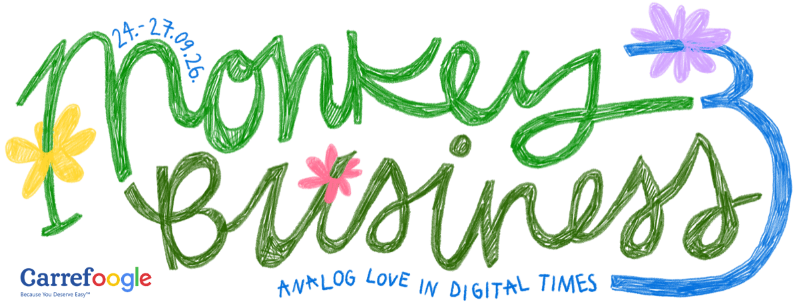
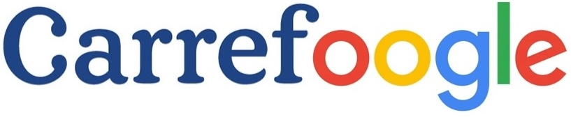
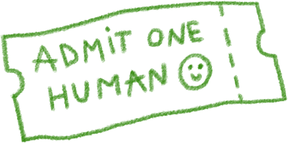
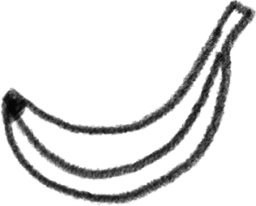
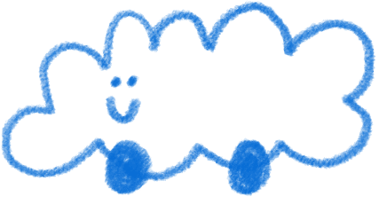

Patrocinado por

MONKEY BUSINESS — 3ª Edición
| Programa | MONKEY BUSINESS (MB-3) |
| Administrado por | Playground Bureau (PGB) |
| Patrocinador oficial | Carrefoogle Corporation (www.carrefoogle.com) |
| Objetivo | Experimentación y desarrollo de métodos de elevación de Goodtimesium |
| Fechas | 24–27 de septiembre de 2026 (4 días, 3 noches) |
| Ubicación | Lugar designado, Catalunya (ubicación compartida tras la inscripción) |
| Capacidad | Aproximadamente 300 personas |
| Elegibilidad | Abierto a toda persona con ganas de payasadas colectivas y respeto mutuo |
| Música | En vivo y deejay, géneros variados, 42–420 BPM |
| Talleres | Durante todo el día, casi todos los días |
| Espectáculos y monólogos cómicos |
Novedad de este año |
| Comida | Deliciosa, almuerzo y cena + desayuno ligero |
| Vibra | Estrictamente buena |
| Estado | Activo — Inscripción abajo |
1. Resumen
Designación del Programa
Meticulously
Orchestrated
Neurokinetic
Kontrolled
Environment for the
Yearly
Orchestrated
Neurokinetic
Kontrolled
Environment for the
Yearly
Boosting of
Universal
Sociability,
Instilling
Neighborly
Euphoria, and
Spreading
Synergy
Universal
Sociability,
Instilling
Neighborly
Euphoria, and
Spreading
Synergy
Prueba de micro, 1, 2, 3, prueba de micro, 1, 2, 3.
Redoble de tambor, por favor. Estamos una vez más EMOCIONADÍSIMOS de anunciar la tercera iteración del programa anual de cuatro días del Bureau dedicado a la investigación, experimentación y perfeccionamiento de métodos para aumentar los niveles de Goodtimesium entre la población general—es hora de M❀O❀N❀K❀E❀Y B❀U❀S❀I❀N❀E❀S❀S.
El programa reúne a los participantes en un emplazamiento rural para un entorno kontrolado en el que se ponen a prueba diversos métodos de elevación de Goodtimesium, incluyendo:
- Comidas comunitarias, cocinadas con mucho cariño
- Ondas sonoras electromagnéticas que te hacen bailar más allá de tu hora de dormir
- Talleres para el cuerpo y el alma
- Espectáculos, monólogos cómicos y artes escénicas
- Fenómeno de física cuántica que dobla la realidad permitiendo olvidar las preocupaciones del día a día
- Tomarte una bebida bien fría junto al lago bajo un cielo bien azul
- Despertarte con el canto de los pájaros
- Convertir desconocidos en amigos de toda la vida
- Y todos esos pequeños momentos para recordar
Todo está incluido—comida, bebidas* y programación—dentro de la contribución de inscripción. No se realizan transacciones monetarias en el recinto durante el evento.
* La barra es libre, pero se pide a los participantes que donen bebidas para mantenerla abastecida. Consulta Bebidas abajo.
2. Patrocinio
De acuerdo con la Sección 9.2b del Acuerdo de Patrocinio, estamos obligados a declarar aquí que estamos "super contentos" de tener a Carrefoogle Corporation como patrocinador oficial del evento. Los participantes anteriores quizás les recuerden por haber patrocinado la Scrolling Area (cabina de scrolling designada para prevenir el scrolling pasivo) durante las dos últimas ediciones del Monkey Business.
Puedes saber más sobre ellos en www.carrefoogle.com.
Carrefoogle Corporation desea comunicar que están profundamente comprometidos con la elevación del Goodtimesium, y niegan categóricamente todas las acusaciones de ‘goodtimes-washing’ y los vínculos con el aumento de los niveles de Separatoxin.
3. Inscripción y Contribución

La inscripción es un pago único que incluye 6 comidas deliciosas, desayuno ligero, un sitio donde plantar tu tienda o aparcar tu furgoneta, y barra libre (más detalles abajo).
El precio aumenta cada mes o cuando se agota la tanda anterior, así que cuanto antes te registres, más contenta estará tu cartera. También tenemos una categoría especial que lleva el nombre de un hombre llamado Lennart Panknin, que fue la primera persona en registrarse al Monkey Business dos años seguidos. Cualquier persona que se llame Lennart Panknin con ADN coincidente tiene derecho.
| Tanda | Importe | Desde |
|---|---|---|
| The Lennart Panknin Lifetime Achievement Release | 120 € | 29 de marzo |
| 1th Release | 155 € | 30 de marzo |
| 2st Release | 165 € | 1 de abril o 1th se agota |
| 3nd Release | 175 € | 1 de mayo o 2st se agota |
| 4rd Release | 185 € | 1 de junio o 3nd se agota |
| 5st Release | 195 € | 1 de julio o 4rd se agota |
| 6rd Release | 205 € | 1 de agosto o 5st se agota |
| 7nd Release | 215 € | 1 de sep. o 6rd se agota |
| 8st Release | 1,5M € | 7nd se agota |
Por si no ha quedado claro: la inscripción es todo incluido. No necesitas gastar dinero en el recinto ni para comer ni para beber. Olvídate de que el dinero existe durante 4 días—es bueno para tus niveles de Goodtimesium.
Teniendo en cuenta todo el dinero que no gastarás en el Monkey Business, nuestra cuota de inscripción es una ganga. Esto es posible porque el Monkey Business es sin ánimo de lucro y todo se hace internamente. Todos los ingresos se reinvierten para hacer posible este programa y los futuros.
4. Programa Musical
El programa musical del MB-3 está actualmente en revisión por el Departamento de Ondas Sonoras del Bureau. Experimentaremos con diversos tipos de ondas sonoras, desde house de los 90 hasta disco, pasando por UK garage, psytech, indie folk y todo lo que hay en medio, incluyendo tipos de ondas sonoras que no sabemos muy bien cómo clasificar. El cartel se anunciará en esta página más adelante.
Este año, el Bureau despliega dos escenarios funcionando simultáneamente durante la noche, cada uno calibrado a una frecuencia diferente de elevación de Goodtimesium. Tanto si te gustan los beats profundos e hipnóticos como cálidos y groovy, el Departamento de Ondas Sonoras te tiene cubierto.
Durante el día, el programa de ondas sonoras cambia a frecuencias más suaves—de esas que combinan bien con el sol, bebidas frescas y posiciones horizontales sobre el césped. La investigación del Bureau confirma que no todo el Goodtimesium necesita generarse a las 2 de la madrugada, y algunas de nuestras lecturas más prometedoras se han registrado durante sets de tarde.
En resumen: los noctámbulos encontrarán material de sobra para moverse hasta el amanecer, y la gente de día nunca tendrá la sensación de haberse metido en el programa equivocado.
Como referencia, los programas musicales de las ediciones anteriores están disponibles a continuación:
5. Talleres y Actividades
Del mismo modo, el calendario de talleres y actividades del MB-3 está actualmente en revisión.
Los programas de las ediciones anteriores están disponibles a continuación:
Además, ¡este año habrá espectáculos, monólogos cómicos y más artes escénicas!
Convocatoria de Artistas
El Departamento de Espectáculos busca llenar el programa de circo con diferentes actuaciones. Si sientes la llamada de contribuir con cualquier tipo de espectáculo, rellena este formulario y nos pondremos en contacto contigo. No dudes en contactarnos para cualquier pregunta (consulta contacto abajo).
6. Provisiones Alimentarias


El Departamento de Comidas Delectables del Bureau proporcionará comida recién hecha seis veces durante el programa, preparada por grandes amigos nuestros que además resulta que son chefs profesionales y aficionados. También habrá desayuno ligero cada mañana. Aun así, se recomienda traer algunas provisiones, como snacks ligeros, fruta y cosas para ir tirando.
7. Bebidas
La Barra Comunitaria del Monkey Business funciona así:
- Donas botellas a la barra (cualquier bebida alcohólica o refresco). Cuanto más pienses beber, más te animamos a donar.
- Nosotros también abastecemos la barra con cervezas, refrescos y licores básicos.
- ¡Tachán, una barra libre con una selección ecléctica!
Por favor, dejad vuestras donaciones de bebidas en la barra al llegar. El Bureau os lo agradece de antemano.
8. Alojamiento
Hay zonas de acampada designadas en el recinto. Los participantes deben traer su propia tienda. Las zonas de acampada están situadas a una distancia suficiente de los escenarios de música para permitir el descanso. También se permite acampar con vehículo. Las opciones de alojamiento adicionales, si las hay, se anunciarán a medida que se acerque la fecha del programa.
9. Acceso al Recinto y Transporte

Bus lanzadera del Bureau desde Barcelona estará disponible para comprar más cerca de la fecha del evento.
O ven por tu cuenta:
| Coche | 2 horas desde Barcelona, 1 hora desde Girona, 30 minutos desde Figueres |
| Transporte público | 2 horas hasta Figueres desde Barcelona, luego 30 minutos de taxi hasta el recinto (~€60) |
| Catapulta | 0,5 segundos desde Figueres |
La ubicación exacta se incluirá en el correo electrónico de confirmación de la inscripción.
10. Aviso sobre el Sindicato
Los operativos del Sindicato pueden identificarse habitualmente por sus gorros de papel de aluminio y un comportamiento errático y absurdo (incluso para nuestros estándares). NO INTERACTÚEN. Generalmente son inofensivos pero por favor, por el amor de dios, no los alienten.
11. Consultas Públicas
Para preguntas sobre el MONKEY BUSINESS u otros programas del Bureau, contáctanos en:
- Email: someone@playgroundbureau.com
- Instagran oficial del Bureau: @playground.bureau
Playground Bureau es una entidad sin ánimo de lucro—cada euro se reinvierte para hacer posible este programa y los futuros.